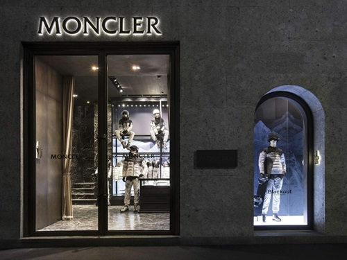

홈 > 브랜드 매거진 > 몽클레르
몽클레르
몽클레르(Moncler)는 1952년 프랑스에서 설립돼 현재 이탈리아에 본사를 둔 럭셔리 다운재킷 브랜드이다.
산업 분야 패션·럭셔리 · 공개 등급 자료 기반 · 브랜드 평가 4.3 ★


한눈에 보는 브랜드
몽클레르는 1952년 프랑스 그르노블 인근 알프스 산악 마을 모네스티에드클레르몽에서 르네 라미용과 앙드레 뱅상이 세운 산악 장비 회사로, 브랜드명은 마을 이름의 약칭이다. 초기에는 침낭과 텐트를 만들다 1954년 공장 노동자용 다운재킷을 처음 제작했다.
2003년 이탈리아 사업가 레모 루피니가 인수해 밀라노로 본거지를 옮기고 럭셔리 브랜드로 재편했으며, 현재 그룹 연 매출은 약 31억 유로 규모다.
브랜드 관점
몽클레르의 핵심은 추위 대비 기능복이던 다운재킷을 럭셔리 패션 영역으로 끌어올린 데 있다. 기능 우선의 캐나다구스가 혹한 성능과 실용 이미지를 앞세운다면, 몽클레르는 슬림한 실루엣과 디자이너 감성, 알프스 리조트 무드를 입혀 도심·여가용 럭셔리로 차별화한다.
한 벌 가격대도 캐나다구스 상단에서 시작해 더 높게 매겨진다. 2018년 시작한 지니어스 프로젝트로 디자이너 협업을 정례화했고, 2020년 발표·2021년 완료한 스톤아일랜드 인수로 그룹 체제를 갖췄다.
2024년 LVMH가 루피니의 지주사 더블R에 지분 참여해 럭셔리 거인과의 연결고리가 생긴 점은 향후 확장의 신호로 읽힌다. 한국에서는 고가 프리미엄 패딩의 상징으로 자리잡아 겨울 의류 위상재 수요와 맞물린다.
시작과 성장
출발점은 1952년 프랑스 모네스티에드클레르몽의 산악 장비 제조였다. 르네 라미용과 앙드레 뱅상이 침낭·텐트·다운 의류를 만들었고, 1960년대에는 프랑스 올림픽 스키 대표팀 공식 공급사로 기능성 입지를 다졌다.
전환점은 2003년 이탈리아 사업가 레모 루피니의 인수였다. 그는 본거지를 밀라노로 옮기고 산악 기능복 정체성을 유지하면서도 패션 하우스 문법을 입혀 럭셔리 브랜드로 재편했다.
2013년 밀라노 증시 상장으로 자본 기반을 확보했고, 2018년 매 시즌 디자이너와 협업하는 지니어스 모델을 도입했다. 2020년 12월 약 11억5천만 유로 규모의 스톤아일랜드 인수를 발표하고 2021년 3월 마무리하며 다브랜드 그룹으로 도약했다.
브랜드 아이덴티티
브랜드 정체성은 알프스의 기능성과 럭셔리의 결합이다. 엠블럼은 청·백·적 삼색의 수탉(cockerel)으로, 수탉은 프랑스를 상징하며 자긍심과 경계, 회복력을 뜻하고 1960년대 프랑스 스키 대표팀 공급 시기에 의미가 깊어졌다.
M의 두 봉우리는 산을 형상화해 알프스 태생을 기린다. 타깃은 디자이너 감성과 브랜드 위상을 함께 원하는 도심·리조트 고객이며, 보이스는 정통성과 보호·내구·세련을 보증하는 절제된 프리미엄 톤이다.
제품과 서비스
대표작은 광택 나일론 라케에 부댕 퀼팅을 적용한 마야 숏 다운재킷으로, 탈착 후드와 조절 밑단을 갖춘 상징적 디자인이다. 한 벌 가격은 대체로 약 200만~300만원대의 고가에 형성된다.
2018년부터 지니어스 프로젝트로 시즌마다 디자이너 협업 라인을 선보이며, 직영 부티크와 공식 온라인, 백화점 채널로 판매한다.
사람들
현재 상태
현재 회장은 창업적 전환을 이끈 레모 루피니이며, 2026년 4월부터 그는 회장직을, 바르톨로메오 론고네가 최고경영자를 맡는 체제로 운영된다. 본사는 이탈리아 밀라노에 있고, 2024년 그룹 연결 매출은 약 31억 유로, 순이익은 약 6억4천만 유로 수준이다.
루피니의 지주사 더블R 지분은 약 18.2%로, 여기에 LVMH가 참여해 간접 지분을 보유한다. 그 밖의 세부 내부 수치는 공개되지 않았다.
타임라인
BI/CI 변천사
함께 읽을 브랜드
 패션·럭셔리 · 매거진 완성코치
패션·럭셔리 · 매거진 완성코치코치는 실용적 가죽 제품을 일상적 럭셔리의 영역으로 끌어올린 브랜드다. 과시적 명품보다 접근 가능한 품질과 라이프스타일 이미지를 통해 오래 쓰는 가방의 감각을 브랜드...
 패션·럭셔리 · 편집 검수디젤
패션·럭셔리 · 편집 검수디젤디젤(Diesel)은 1978년 렌조 로소가 이탈리아 브레간체에서 설립한 데님 중심의 컨템포러리 패션 브랜드다. 도발적이고 실험적인 디자인으로 데님 헤리티지를 재해석...
 패션·럭셔리 · 자료 기반돌체앤가바나
패션·럭셔리 · 자료 기반돌체앤가바나돌체앤가바나는 도메니코 돌체와 스테파노 가바나가 1985년 이탈리아 밀라노에서 선보인 럭셔리 패션 하우스다. 시칠리아의 바로크 감성과 지중해의 관능을 의상으로 옮겨...
 패션·럭셔리 · 매거진 완성몽블랑
패션·럭셔리 · 매거진 완성몽블랑몽블랑은 필기구를 기록의 도구에서 성취와 품격의 상징으로 끌어올린 브랜드다. 만년필은 기능 제품이지만, 브랜드가 축적한 이미지는 서명, 의사결정, 지적 권위 같은 장...
오메가(OMEGA)는 스위스 스와치 그룹 산하의 럭셔리 시계 제조 브랜드이다.
 패션·럭셔리 · 편집 검수조르지오 아르마니
패션·럭셔리 · 편집 검수조르지오 아르마니조르지오 아르마니(Giorgio Armani)는 1975년 밀라노에서 설립된 이탈리아 럭셔리 패션 하우스이다.
 패션·럭셔리 · 자료 기반에르메네질도 제냐
패션·럭셔리 · 자료 기반에르메네질도 제냐제냐(Zegna)는 1910년 이탈리아에서 모직 원단 공장으로 출발한 럭셔리 남성복 브랜드이다.
 패션·럭셔리 · 편집 검수롤렉스
패션·럭셔리 · 편집 검수롤렉스롤렉스(Rolex)는 스위스 제네바에 본사를 둔 럭셔리 시계 제조사이다.